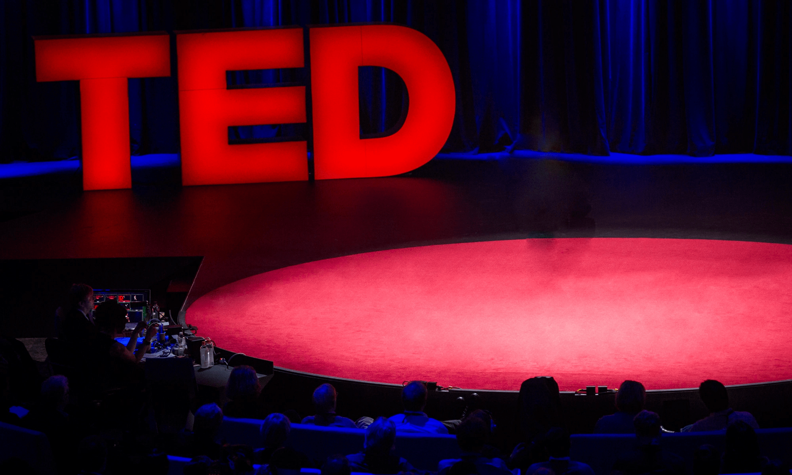

About TED
Centered around topics like compact disks, e-books, and fractal mapping of coastlines, TED (Technology, Entertainment, and Design) has evolved into a global beacon of creativity and intellect. Initially featuring a narrow range of panelists, TED gradually broadened its scope to include business magnates, scientists, and philosophers. TED's influence extends beyond its flagship event, spawning a diverse array of sister initiatives such as TED-Ed educating people through engaging animations, TEDGlobal, a traveling conference held in various locales, and the TED Prize, offering recipients the opportunity to catalyze positive change. TED has since embraced inclusivity, welcoming all into its fold and continually inspiring progress.
About TEDx

TEDx is an initiative to promote 'ideas worth spreading' in local communities across the world. Steered by passionate individuals, TEDx events aim to infuse the spirit of TED at the grassroot level through a series of independently organised events. These events are aimed at bringing new ideas and stories to the society so as to inspire and spark meaningful conversations. These events, under the umbrella of TED, adhere to set of prescribed guidelines provided alongwith the license. More than 3000 events are held as part of TEDx each year.
About SGVS
With a motto, “Arise, awake & stop not till the goal is achieved”, SGVS has taken it as a challenge to imbibe in students right values, awareness of their strengths and weakness, to make them able to think creatively, to become techno savvy and showcase their hidden talent, also to develop a spirit of camaraderie and competitiveness. One can witness its orchestration with superb precision by highlighting its unique design based on new concepts and ideas; it is all set to deliver a value proposition which exceeds everyone's expectation.
Our Team
-

Rohit Khurana
Organiser -
?